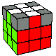
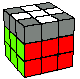
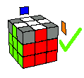
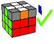
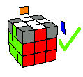
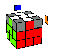
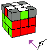
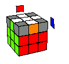
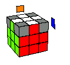

Yellow Cross | Yellow Corners | Middle Layer | White Cross |
WHITE EDGES | White Corners | Finale
Now we are going to group the white edge pieces with the colors around it like this...

Maintaining the white face on top…

Rotate the top slice until (at least) two white edge pieces are connected to their correct faces
It can be connected in these three possible positions
•Next to each other •Opposite each other 
•All four are connected 
If the white edge pieces connected are next to each other

Select the face at the right of the two misplaced white edge pieces as your pivot face

Perform R-U-R’-U-R-U-U-R’-U
If the white edge pieces connected are opposite each other

Select the face of any of the two correctly placed edge pieces.
Perform R-U-R’-U-R-U-U-R’
You will now have the white edge pieces connected next to each other
Use algorithm for solving white edge pieces connected next to each other
If all the white edge pieces are connected to their centers,

Then proceed to the next stage.